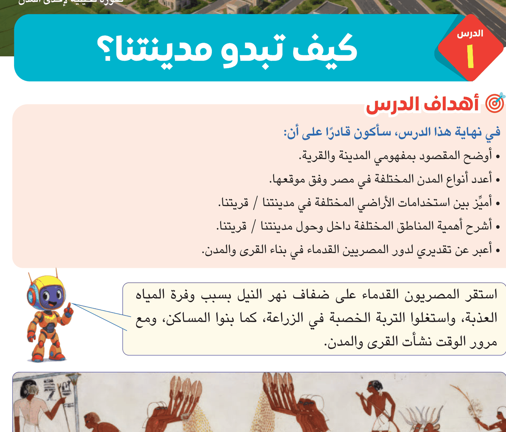
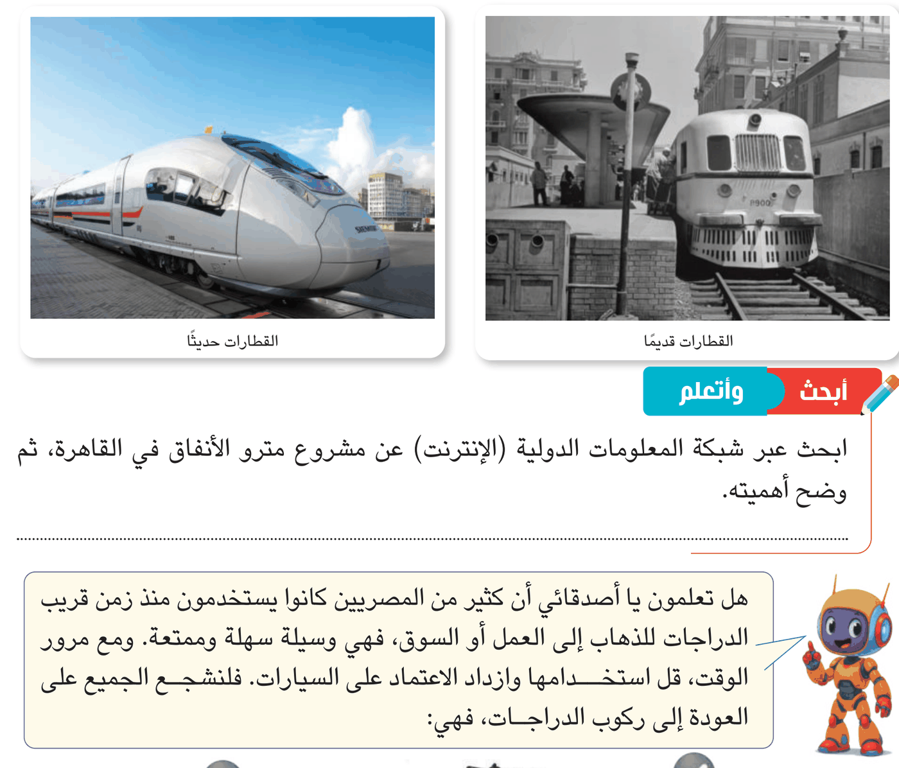

الوحدة الثانية: مدينتنا وحياتنا اليومية • الجزء الأول
عاش المصري القديم في البداية فوق الهضاب في تنقل وترحال دائم بحثاً عن الثمار وصيد الحيوانات. وعندما حلّ الجفاف، هبط إلى وادي النيل حيث استقر وعرف الزراعة وتربية الحيوانات وبنى بيوته من الطوب اللبن، فتكونت القرى ثم المدن ثم نشأت أعظم حضارة في التاريخ.

| وجه المقارنة | القرية (الريف) | المدينة (الحضر) |
|---|---|---|
| النشاط الاقتصادي السائد | الزراعة وتربية الحيوانات والأنشطة المرتبطة بها. | الصناعة، التجارة، الخدمات الحكومية، والسياحة. |
| طبيعة المباني والسكان | مبانٍ منخفضة تحيط بها الحقول الخضراء ومجتمع مترابط. | أبراج وعمارات سكنية شاهقة وشوارع متسعة وكثافة سكانية. |
| الخدمات المتاحة | خدمات أساسية تعمل الدولة حالياً على تطويرها (مبادرة حياة كريمة). | مراكز جامعية، مستشفيات كبرى، شركات، ومؤسسات حكومية. |
أجدادنا الفراعنة زمان كانوا تايهين في الصحراء.. لما نزلوا عند نهر النيل لقوا المية العذبة والأرض الطمي الخصبة، زرعوا وبنوا بيوت جنب زرعهم.. من هنا اتعلموا الاستقرار وبدأت أول قرية وأول مدينة في مصر!
شهدت المدن المصرية تطوراً هائلاً عبر العصور في تقديم المرافق الحيوية للمواطنين:
- مياه الشرب: قديماً كانت تنقل يدوياً من النيل، والآن شبكات مياه نقية ومحطات تنقية وتحلية مياه عملاقة.
- الكهرباء والطاقة: قديماً استخدمت القناديل والشموع، والآن محطات توليد كبرى وطاقة شمسية ورياح نظيفة.
- الصرف الصحي: إنشاء شبكات حديثة ومحطات معالجة ثلاثية لحماية البيئة وإعادة استخدام المياه في زراعة الغابات.

| المشروع أو الوسيلة | الأهمية والدور التنموي للدولة المصرية |
|---|---|
| شبكة الطرق والكباري والأنفاق | توسيع المحاور الرئيسية، إنشاء الكباري وحفر أنفاق أسفل قناة السويس لربط سيناء بالدلتا وتسهيل حركة التجارة وتقليل الازدحام. |
| القطار الكهربائي الخفيف (LRT) | وسيلة نقل جماعي خضراء وسريعة تربط القاهرة الكبرى بالمدن الجديدة مثل العاصمة الإدارية والعاشر من رمضان. |
| المونوريل (Monorail) | قطار معلق يسير على مسار خرساني فردي، صديق للبيئة يعمل بالكهرباء ويقلل التلوث والزحام المروري. |
( أ- الهضاب | ب- السهول الفيضية | جـ- شواطئ البحار | د- ضفاف النيل )
( أ- الفيضان الشديد | ب- الجفاف فوق الهضاب | جـ- الزلازل | د- البرد القارس )
( أ- الزراعة ورعي الأغنام | ب- الصناعة والتجارة والخدمات | جـ- صيد الأسماك النهري فقط | د- التعدين في الصحراء فقط )
( أ- الملوثة للبيئة | ب- الصديقة للبيئة (الخضراء) | جـ- المعتمدة على الفحم | د- البطيئة جداً )
( أ- سيناء | ب- مطروح | جـ- أسوان | د- الفيوم )
الإجابة: ................................................................................................................................................................................
الإجابة: ................................................................................................................................................................................
الإجابة: ................................................................................................................................................................................
1- نهر النيل (المصدر الرئيسي للمياه العذبة وسبب نشأة الحضارة المصرية).
2- القرى (الريف) (تجمعات اعتمدت على الزراعة وتربية الماشية).
3- الطوب اللبن (طمي النيل المخلوط بالقش والمجفف في الشمس).
4- المونوريل (Monorail) (قطار كهربائي معلق سريع وغير ملوث للبيئة).
5- مبادرة حياة كريمة (المشروع الرئاسي الأضخم لتطوير الريف المصري وخدماته).
(1) أ- الهضاب | سكن الكهوف وتنقل فوق الهضاب في العصر الحجري القديم.
(2) ب- الجفاف فوق الهضاب | انقطاع الأمطار وموت الحيوانات دفعه للنزول نحو النيل.
(3) ب- الصناعة والتجارة والخدمات | الأنشطة الاقتصادية الرئيسية لسكان المدن الحضرية.
(4) ب- الصديقة للبيئة (الخضراء) | لأنها تعمل بالطاقة الكهربائية النظيفة ولا تطلق عوادم ضارة.
(5) أ- سيناء | لربط شبه جزيرة سيناء الحبيبة بالوطن الأم وسهولة الانتقال.
(1) ( ✗ ) خطأ. التصويب: عرف الاستقرار وبناء القرى بعد معرفته لحرفة الزراعة.
(2) ( ✗ ) خطأ. التصويب: تمتلك مصر الآن أحدث شبكات الطرق والمونوريل والقطارات السريعة.
(3) ( ✓ ) صواب. تسهم في تيسير التجارة وسرعة التنقل بين المحافظات.
(4) ( ✗ ) خطأ. التصويب: استخدم المشاعل والقناديل الزيتية والشموع قديماً.
(5) ( ✓ ) صواب. يوفر وسيلة نقل حضارية سريعة للمدن الجديدة.
السؤال الرابع: (1) الطوب اللبن | (2) وادي النيل.
السؤال الخامس (بم تفسر):
(1) بسبب حلول الجفاف فوق الهضاب وانقطاع الأمطار وموت النباتات والحيوانات، فنزل بحثاً عن الماء والغذاء.
(2) للحفاظ على البيئة من التلوث، وتقليل الانبعاثات الكربونية الضارة، وتخفيف الازدحام المروري وتوفير طاقة نظيفة.
السؤال السادس (ما النتائج المترتبة على):
(1) ترتب على ذلك استقرار المصري القديم وبناء المساكن من الطوب اللبن وظهور القرى ثم المدن ونشأة الحضارة المصرية القديمة.